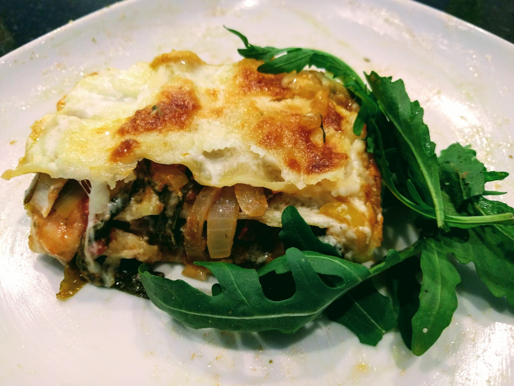

Lasagnes ail des ours & roquette

Pour 5-6 personnes :
- 300g de feuilles d'ail des ours
- 300g de roquette
- Un gros poireau
- Deux gros oignons
- Une boîte de tomates concassées
- 60g de beurre
- 60g de farine
- 75cL de lait
- 250g de mozzarella
- 250g de plaques de lasagne
- 100g de parmesan (ou d'emmental)
- Sel, poivre
- Éplucher et émincer les oignons en petits bouts. Les faire revenir au fond d'une grande poêle à feu moyen, dans un peu de beurre.
- Pendant ce temps, laver le poireau, enlever la partie verte trop dure, l'émincer et le rajouter dans la poêle.
- Laver l'ail des ours et couper les feuilles en lamelles. Laver la roquette. Tout ajouter avec les tomates dans la poêle, laisser mijoter à feu doux une quinzaine de minutes.
- Pendant ce temps, faire une béchamel avec le lait, le beurre et la farine. À part, couper la mozzarella en bouts, et râper le parmesan.
- Préchauffer le four à 180°C. Beurrer un gros plat à four, et former la lasagne : commencer par mettre un peu de béchamel sur le fond, recouvrir le fond de plaques de lasagne, puis ajouter une couche de mélange de légumes, une couche de plaques de lasagnes, une couche de béchamel et de parmesan, une couche de plaques de lasagnes, une couche de légumes, etc. Il faut éviter que ça déborde trop, et garder de la béchamel pour la fin.
- Recouvrir la dernière couche de plaque de lasagnes avec le reste de béchamel et de la mozzarella. Enfourner une quarantaine de minutes, jusqu'à ce que le dessus soit bien doré, et qu'un couteau s'enfonce sans difficulté. Servir chaud avec un peu de roquette en accompagnement.